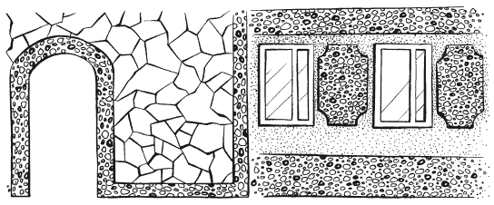

Оштукатуривание фасадов.

Зачастую кирпичные фасады, кладка которых выполнена впустошовку, штукатурят, используя для этого различные виды штукатурок, чаще всего на цементных растворах. В последнее время появились и новые составы.
Штукатурка– это отделка стен и других плоскостей дома. Ее назначение состоит в том, чтобы выровнять поверхности стен, предохранить их от вредных атмосферных воздействий. С помощью штукатурных работ улучшают архитектурно-художественное оформление как фасада дома, так и его интерьера. Штукатурка выполняется путем нанесения на поверхность штукатурного раствора. Достоинства штукатурных работ состоят в том, что создается сплошная связь с поверхностью, на которую наносится раствор. При этом закрываются щели между конструкцией и штукатуркой, обеспечивается бесшовность поверхности, существует возможность создания поверхности любой фактуры. Для качественно выполненной штукатурки не страшны снег, дождь и прочие атмосферные осадки. К недостаткам штукатурных работ можно отнести большую трудоемкость выполнения, а также продолжительный срок отвердения и высыхания раствора. Штукатурку по своему назначению классифицируют на обыкновенную и декоративную.
Декоративная штукатурка– специально созданный раствор, в который при его изготовлении добавляют цветные пигменты. Такие штукатурки используют в основном для отделки фасадов домов.
Обыкновенные штукатуркис использованием известковых, цементных, гипсовых, известково-цементных и известково-гипсовых растворов применяют для более простой наружной или внутренней отделки дома. Обыкновенную штукатурку по качеству отделки делят на простую и улучшенную. Простую штукатурку выполняют в том случае, если поверхность не требует тщательной отделки. Она состоит из двух отдельно наносимых слоев – обрызга, грунта. Их применяют для сглаживания неровностей строительных конструкций. Каждый из этих слоев имеет строго определенное назначение. Улучшенную штукатурку применяют при отделке жилых помещений, а также для оштукатуривания фасадов домов.
Приготовление штукатурных растворовСтроительный раствор – это искусственный каменный материал, полученный в результате правильно подобранной смеси, состоящей из вяжущего материала, заполнителя, воды и специальных добавок. К основным вяжущим материалам относятся известь, гипс и цемент, а к заполнителям – природный песок и шлак. Вяжущие материалы подразделяют на воздушные, способные твердеть и сохранять прочность только на воздухе (гипс, известь строительная воздушная, глина), и гидравлические, твердеющие и сохраняющие прочность как на воздухе, так и в воде. Это различные виды цементов, а также строительная гидравлическая известь.
Растворы делят на цементные, гипсовые, известковые, глиняные и смешанные – цементно-известковые, цементно-глиняные, известково-гипсовые и т. д. По назначению их подразделяют на растворы для обычных штукатурок и декоративных.
В зависимости от соотношения между количеством вяжущего материала и заполнителя различают жирные, тощие и нормальные растворы.
Жирные растворы
Жирные растворы содержат много вяжущего материала. Они подвижны и пластичны, но при твердении дают большую усадку. При нанесении толстого слоя жирные растворы растрескиваются.
Тощие растворы
Тощие растворы содержат относительно небольшое количество вяжущего материала, зато в избытке – заполнителей. Такие растворы не дают усадки, не растрескиваются, однако они малопластичны, недостаточно подвижные и не очень прочные.
Нормальные растворы
Нормальные растворы занимают промежуточное положение между жирными и тощими, их получают при правильном соотношении вяжущих материалов и заполнителей.
Жирность раствора определяют погружением в него палки («весла») или лопаты, которую вынимают после помешивания в течение 1–2 мин. Тощий раствор почти к ней не прилипает, и тогда к нему следует добавить известь или глину. Раствор жирный обволакивает палку, сильно к ней прилипая, следовательно, ему необходим заполнитель. Нормальный раствор прилипает в отдельных местах.
Количество приготовленного раствора зависит от объема работ и толщины штукатурки. Подбор состава раствора выполняют исходя из его свойств, назначения, условий эксплуатации и вида поверхностей. По назначению строительные растворы бывают:
– кладочные– для каменной кладки фундаментов, стен, столбов, сводов и пр.;
– штукатурные– для фасадов зданий, для декоративных и специальных штукатурок, крепления облицовочных материалов, а также для оштукатуривания стен, потолков и для устройства мозаичных полов;
– монтажные– для заполнения и заделки швов между крупными элементами при монтаже зданий и сооружений из готовых сборных конструкций и деталей;
– специальные– тепло-, звуко-, гидроизоляционные, защитные против излучений, коррозии и др.
Сухие растворные смеси
Сухие растворные смеси, состоящие из вяжущего и высушенного заполнителя, также зачастую используют для штукатурных, выравнивающих и штукатурно-декоративных работ. Влажность сухой смеси не более 1 %. Готовят ее централизованно, снабжают паспортом с указанием состава, марки и времени приготовления. Смесь, содержащую цемент и активные минеральные добавки, поставляют в гидроизоляционной упаковке. Сухую смесь затворяют на объекте расчетным количеством воды в небольшом смесителе.
У сухих смесей масса достоинств. Во-первых, они обеспечивают высокое качество, стабильность марки и состава раствора по сравнению с приготовлением его на объекте, что очень важно для декоративных штукатурок. Во-вторых, устраняются все неудобства, связанные с приготовлением, перевозкой и хранением мокрых растворов зимой. В-третьих, при перевозке к месту работ не может быть никакой потери смеси. В-четвертых, исключается перевозка воды. В-пятых, можно создать запас смеси на объекте и приготовлять раствор в необходимом количестве.
К сожалению, есть и недостатки: это высокая стоимость, связанная с затратами на сушку заполнителя, и короткий срок ее хранения.
Технология оштукатуривания фасадов домаТехнология оштукатуривания ничем не отличается от работ, проводимых внутри помещений. Фасады могут быть оштукатурены обычными или декоративными растворами.
Подготовка поверхности под штукатурку
Перед оштукатуриванием необходимо выверить и оценить состояние рабочей поверхности. Для этого используются специальные измерительные инструменты: метр, рулетку, кисти, ватерпас, рейку с отвесом (для проверки вертикальности и горизонтальности поверхности), деревянные и металлические угольники с подвижной планкой (для разделки углов, разметки откосов и др.).
Основное требование, которое предъявляют к штукатурке фасадов, заключается в прочности и надежности сцепления раствора с оштукатуриваемой поверхностью. При производстве штукатурных работ основным материалом является штукатурный раствор.
Для прочного сцепления штукатурного раствора с поверхностью стены ее необходимо хорошо подготовить. Подготовка к оштукатуриванию заключается в том, чтобы удалить с нее грязь, пыль, жировые пятна и придать поверхности шероховатость. Сильно загрязненные места очищают скребками или щеткой. Затем каменным, кирпичным и бетонным поверхностям придают шероховатость. На гладких бетонных поверхностях насечки делать труднее всего. На каменных и кирпичных стенах, если кладка выполнена в пустошовку, шероховатости достаточно. Кладку с полным заполненным швом следует обработать с помощью зубила и молотка. Швы в кладке вырубают на глубину не менее 10 мм и прочищают стальной щеткой. Если в кирпичной кладке или бетоне окажутся легко отбиваемые при насечке места, их следует вырубить до прочного основания.
Декоративные штукатуркиДекоративные штукатурки представляют собой толстослойные покрытия, имеющие определенную фактуру, которая определяется размером и формой зернистого наполнителя (мелких камешков, кусочков кварца, слюды и т. п.), используемым инструментом, а также технологическими приемами нанесения.
Достоинства таких толстослойных покрытий в том, что они наносятся практически на любые поверхности – бетон, кирпич, цемент, дерево и т. д. Декоративные штукатурки просты в применении. Их отличительная черта – они пластичны, просты в применении и «послушны» любому инструменту. К тому же декоративные штукатурки водонепроницаемы, поскольку в их состав входят связующие элементы, которым не страшна никакая влага. Они прекрасно маскируют изъяны базовой поверхности: микротрещины, вздутия, старую краску. Декоративные покрытия состоят из «зерен» разной величины и, соответственно, бывают мелко– и крупнозернистыми. В зависимости от величины «зерна» и способа нанесения можно получить разный рисунок. Если надо получить эффект расцарапанной бороздками стены, следует остановить выбор на мелкозернистой штукатурке с гранулами натурального камня и использовать фактурный валик. Можно создать атмосферу морского побережья, если круговыми движениями нанести шпателем крупнозернистую штукатурку. Штукатурки могут быть тонированы в широком диапазоне цветовых решений. При этом покрытие надолго сохраняет яркость расцветки.
Выделяют разные виды декоративных штукатурок: каменные, известково-песчаные цветные, терразитовые, сграффито, синтетические, акриловые.
Известково-песчаные цветные штукатурки
Известково-песчаные цветные штукатурки по своему внешнему виду имитируют горные породы – песчаник и травертин. Заполнителем в таких штукатурках служит кварцевый песок, иногда – высевки горных пород, поэтому известково-песчаные штукатурки являются самыми экономичными из цветных штукатурок.
Терразитовые штукатурки
Терразитовые штукатурки получают из сухих терразитовых смесей. Помимо кварцевого песка, заполнителем в них является каменная крошка различной крупности. Терразитовые штукатурки обрабатывают в полузатвердевшем состоянии гвоздевыми щетками, циклеванием зубчатой циклей, а также с помощью пескоструйного аппарата. В результате получают фактуру поверхности мелкой или средней зернистости, которая имитирует туф или песчаник.
Каменные штукатурки
Каменные штукатурки – трудоемкий вид цветной декоративной штукатурки. Заполнителем является каменная крошка гранита или мрамора. Поверхность затвердевшей штукатурки обрабатывают специальными ударными инструментами по камню – троянкой, зубилом, бучардой. Обработанная поверхность каменной штукатурки имитирует определенную горную породу (соответственно, гранит или мрамор). Вместо ударных инструментов затвердевшую поверхность штукатурки можно протравливать 10 %-ным раствором соляной кислоты с последующей промывкой водой. В результате протравливания кислота разрушает поверхностный слой цемента, обнажая поверхность слюды, а также кислотостойкой каменной крошки (гранита, диорита, кварцита и пр.).
Штукатурка сграффито
Штукатурка сграффито (в переводе с итальянского означает «выцарапанный») – это декоративно-художественная штукатурка, предназначенная для отделки зданий. При оштукатуривании на грунт наносят 2–3 слоя накрывки разного цвета. Затем по неокрепшему раствору (в течение 4–12 ч после его нанесения) эти слои процарапывают стальными инструментами в определенных местах по контуру рисунка. После процарапывания накрывочных слоев на штукатурке появляется рельефный красочный орнаментный или сюжетный рисунок.
Синтетическая штукатурка
Синтетическая штукатурка – оригинальный вид декоративного покрытия фасадов. Основаниями для нанесения покрытия служат ровная бетонная поверхность или улучшенная штукатурка. Покрытие состоит из крошки различных материалов, которую набрасывают на клеевой слой отделываемой поверхности специальным крошкометом.
Отделываемую поверхность для лучшего сцепления с клеем сначала грунтуют разведенной поливинилацетатной водоэмульсионной краской для отделки фасадов. Клеем, на который наносят крошку, служат неразведенные водоэмульсионные краски. Кроме красок, применяют коллоидно-цементный клей (КЦК) и полимерные составы. Гранулированная крошка может быть гранитной, сланцевой, керамической, стеклянной и полимерной. Крошка крупностью 2–5 мм создает крупнозернистую фактуру поверхности, крошка менее 0,5 мм (иногда с добавкой цветного портландцемента) дает фактуру, имитирующую бархат или другую ткань. После высыхания клея отделанную поверхность фасада защищают тонким слоем акрилатного лака.
Декоративные штукатурки подходят как для внутренних, так и для наружных работ. Хорошо они смотрятся на лоджии. При окрашивании швы между камнями лучше сделать другим цветом, нежели сами камни. Например, хорошо сочетаются серые камни и черные швы (рис. 7).

Акриловая штукатурка
Акриловая штукатурка – новый высокоэластичный полимерный материал, на 100 % состоящий из акрила. Представлен несколькими десятками 20 стандартных цветов и оттенков, а также широким набором текстур. Кроме того, по желанию заказчика возможен выбор любых цветов и текстур, например Fine(тонкая), Sand(песчаная), Modif ild(модифицированная) и Pitz(штукатурная). Размер частиц определяет внешний вид и расход каждого продукта.
Полимерный материал используют в качестве отделочного текстурного и цветного покрытия, защищающего стены от воздействия атмосферных осадков. Его можно применять непосредственно для предохранения самых разных поверхностей здания – штукатурки, цемента, кирпича, монолитного бетона, металла, утеплителей и т. д. Полимер также применяют поверх различных грунтовочных материалов. Использование материала гарантирует высокие показатели адгезии на поверхностях, подготовленных соответствующим образом. Основа для нанесения должна быть сухой, чистой, не содержащей рыхлые или инородные частицы, и незамерзшей.
По внешнему виду и на ощупь акриловая штукатурка аналогична обычному штукатурному покрытию, используемому для внешнего декорирования стен. Его свойства – термопластичность и упругость. Благодаря им поверхность защищена от образования трещин и обеспечивается подвижность строения.
Размешивание полимерного материала Stuc-O-Flехпроизводят с помощью лопастной мешалки или электродрели до обеспечения нужной для использования консистенции. Для большего удобства работы при необходимости к нему можно добавлять немного чистой воды. При нанесении материала распылением потребуются примерно 350–400 мл воды на ведро состава. Расход материала: 1 стандартное (8–10-литровое) ведро приблизительно на 13–14 м (текстура Sand. Для других текстур значения варьируют. В зависимости от погодных условий время высыхания составляет 12–24 ч, в значительной степени это зависит от температуры и влажности. Наносить покрытие желательно в теплую погоду, чтобы в процессе высыхания не допускать воздействия мороза или дождя.
Нанесение высокоэластичной акриловой штукатурки в значительной степени зависит от требуемой текстуры. Обычно верхний слой наносят шпателем и разравнивают пластиковой кельмой. Также полимерный материал можно наносить методом распыления с помощью соответствующего оборудования. Следует учитывать, что обычно после высыхания верхний слой по цвету оказывается несколько темнее по сравнению с тем, что может быть в ведре (при разведении его в воде), и в течение недели можно наблюдать небольшие изменение или расхождение цвета в период высыхания.
Однако достоинств у нового материала значительно больше. Тепло и красота традиционной штукатурки, присущие высокоэластичной акриловой штукатурке, сочетаются с исключительными эксплуатационными характеристиками и износостойкостью покрытия, а также возможностью простого и легкого нанесения. Stuc-O-Flехобладает устойчивостью к действию соли, водостоек, устойчив к плесени и грибкам, пожаростоек, выдерживает морозы до –50 °C не трескаясь. Высокая эластичность обеспечивает оптимальную устойчивость к трещинам даже в местах соединения деталей.
Окраска штукатурокЦвет штукатурке придает специальный заполнитель – пигмент, который вводят в состав раствора. Растворы готовят на основе извести и светлого кварцевого или цветного песка с добавкой пигмента. Для придания растворам большей механической прочности и водоудерживающей способности в них вводят 10–15 % цемента.
Цементная окраска
Цементная окраска – самая простая. Для этого цемент надо развести водой и покрасить стену кистью. Так можно получить серый цвет камня. Цементно-известковый раствор дает светло-серый цвет, гипсовый – белый.
Известковая окраска
Известковая окраска дает светлый цвет, обычно уходящий в желтизну. В него можно добавлять самые разные пигменты. Работать нужно кистью или краскопультом.
Клеевая окраска
Клеевая окраска – наиболее стойкая. Старую окраску стен нужно счистить скребками (металлическими шпателями) и смыть водой. Сильно загрязненные стены следует промыть купоросным раствором. Огрунтовку купоросным раствором надо производить 1–2 раза маховой кистью. После просушки нужно приступить к окраске колерным раствором, который составляют из мела, клея КМЦ, сухих красок требуемого цвета. Для большей прочности клей добавляют в краску.
Предварительно мел просеивают через сито, в клей добавляют воду, чтобы он полностью растворился, после чего ставят на огонь. Отдельно разводят краску в холодной (до 20–25 °C) воде. В клеевую воду добавляют мел и разведенный краситель. Полученную смесь тщательно перемешивают и процеживают через марлю. Колер нужно заготовить сразу на всю площадь окраски. Наносят его на стену в три приема: вертикально, горизонтально и снова вертикально.
Для грунтовки на 1 м окрашиваемой поверхности требуется: воды – 300 мл, мела молотого – 60 г, медного купороса – 5 г, клея малярного – 2,5 г, мыла хозяйственного – 50 г (варится вместе с клеем). Для покраски: воды 500–600 мл, мела – 300 г, клея – 200 г, краски – 30 г (можно и больше, зависит от того, какой цвет желаете получить).